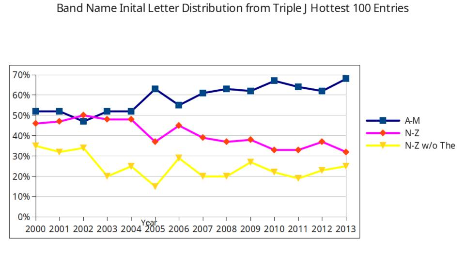

Band Names
Posted on January 20, 2015
by Ross
I was talking to Ehren Thompson about the fact that all his 2014 Hottest 100 pick were from the first half of the alphabet, which caused me to notice 9/10 of mine were as well. Apparently this is a naming trend that’s increasing overtime.
